The Hub's flash, drawn for less
M72 · 24 September 2026 · measured on this MacBook, headless, 1680 × 1050, on the live Hub during market hours. Nothing here is deployed.
What this page shows. The Hub's scintillation — the flash a number makes when it moves — is the signature of the product. It was also costing a lot: the browser was re-drawing the text of every flashing cell, about 45 times a second. The staged branch draws the flash once into an invisible copy of the number sitting exactly on top of the cell, and then just fades that copy, which the graphics chip can do on its own. This page proves the flash still looks the same on every kind of cell, and cuts the remaining cost further.
1 · Does it still look the same?
The decisive test first. One page, one cell, one instant, the same number with the same neighbours — photographed twice in the same second: once drawn the old way, once drawn the new way. Nothing can drift between the two pictures except the way the flash is drawn.
| cell | 0 ms | 100 ms | 250 ms | 450 ms |
|---|---|---|---|---|
| board price | 5.344% of pixels differ, brightest by 56 of 255 | 5.641% of pixels differ, brightest by 39 of 255 | 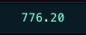 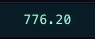 4.642% of pixels differ, brightest by 19 of 255 | 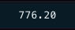 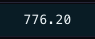 identical |
| board change percent | 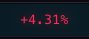 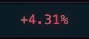 5.33% of pixels differ, brightest by 55 of 255 | 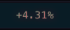 5.33% of pixels differ, brightest by 39 of 255 | 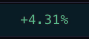 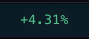 4.927% of pixels differ, brightest by 18 of 255 | 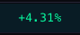 identical |
| identity price | 5.741% of pixels differ, brightest by 57 of 255 | 5.758% of pixels differ, brightest by 40 of 255 | 8.426% of pixels differ, brightest by 18 of 255 | identical |
| identity change percent | 5.421% of pixels differ, brightest by 59 of 255 | 5.763% of pixels differ, brightest by 42 of 255 | 4.921% of pixels differ, brightest by 20 of 255 | identical |
| cohort ticker | 5.353% of pixels differ, brightest by 55 of 255 | 5.801% of pixels differ, brightest by 39 of 255 | 5.224% of pixels differ, brightest by 19 of 255 | identical |
| scintilla strip line | 7.519% of pixels differ, brightest by 59 of 255 | 7.61% of pixels differ, brightest by 42 of 255 | 7.145% of pixels differ, brightest by 20 of 255 | identical |
What that shows, plainly. The flash is the same colour, in the same place, on the same pixels, and by 450 ms the two are pixel for pixel identical. At the brightest instant the new one is a hair bolder: about 5–8% of the pixels in the cell differ, and the strongest of those differ by roughly 55 of 255. That is the edges of the digits, and it happens because the new flash is a second copy of the number drawn on top of the original rather than a recolouring of it. Side by side at full size I cannot tell them apart; a judgement that it is close enough belongs to Alan's eye, not to mine.
2 · Every kind of cell, live against the two branches
The same four moments, on every kind of cell that flashes, in three separate browsers: the Hub as it is live now, the staged branch, and this branch. These three ran minutes apart with live data, so a number or a neighbour can have moved between them — read these for gross differences (doubled text, a missing flash, a shifted box), not for pixel equality; section 1 is the pixel test.
3 · What it costs
Two ways of measuring, both headless at 1680 × 1050 with live market data. Driven holds the flash rate steady at about 45 starts a second across 34 board cells, so the three variants do exactly the same work and can be compared; three runs each, alternating, and the middle number is shown. Live flow just watches the real board for a minute. The number Alan cares about is the first column: seconds of processor time the page burns per minute.
| variant | CPU-sec / min (driven) | CPU-sec / min (live flow) | script | style | layout | layouts / s | restyles / s | overlays |
|---|---|---|---|---|---|---|---|---|
| Hub as it is live now | 8.37 | 5.23 | 0.6 | 0.73 | 1.44 | 60 | 60 | 0 |
| the staged branch (overlay) | 9.05 | 2.93 | 0.62 | 0.71 | 0.75 | 45.1 | 98.5 | 2 |
| this branch (overlay, made cheaper) | 8.02 | 1.9 | 0.55 | 0.88 | 0.74 | 46.4 | 63.3 | 0 |
Every run, unrounded:
| variant | mode | seconds | glow starts | CPU-sec/min | layouts/s | restyles/s | overlays | at |
|---|---|---|---|---|---|---|---|---|
| A | driven | 30 | 1431 | 9.18 | 59.8 | 59.8 | 0 | 17:41:40Z |
| B | driven | 30 | 1432 | 9.48 | 44.9 | 100.1 | 1 | 17:42:33Z |
| C | driven | 30 | 1432 | 7.92 | 46.5 | 63.4 | 0 | 17:43:25Z |
| A | driven | 30 | 1431 | 8.1 | 60.1 | 60.1 | 0 | 17:44:17Z |
| B | driven | 30 | 1430 | 9.05 | 45.1 | 94.5 | 2 | 17:45:09Z |
| C | driven | 30 | 1431 | 8.02 | 45.9 | 60.4 | 0 | 17:46:01Z |
| A | driven | 30 | 1432 | 8.37 | 60 | 60 | 0 | 17:46:53Z |
| B | driven | 30 | 1431 | 8.9 | 47.2 | 98.5 | 72 | 17:47:45Z |
| C | driven | 30 | 1431 | 8.11 | 46.4 | 63.3 | 0 | 17:48:37Z |
| A | live flow | 60 | — | 5.23 | 44.3 | 44.5 | 0 | 17:49:57Z |
| B | live flow | 60 | — | 2.93 | 8.7 | 39 | 70 | 17:51:18Z |
| C | live flow | 60 | — | 1.9 | 4.5 | 19.9 | 0 | 17:52:38Z |
4 · Where the cost actually goes
The same driven load, counting what the page asks the browser for. Building an animation is the expensive request; replaying one the cell already owns is nearly free. This is the cut that matters, and it is also how the defect below shows itself.
| variant | CPU-sec / min | flashes | animations built | …on the overlay | …on the cell's text | replays | cells with an overlay |
|---|---|---|---|---|---|---|---|
| Hub as it is live now | 10.66 | 2569 | 1754 | 0 | 1754 | 0 | 0 |
| the staged branch (overlay) | 10.06 | 2556 | 1732 | 1602 | 109 | 0 | 124 |
| this branch (overlay, made cheaper) | 9.26 | 2555 | 124 | 64 | 1 | 1591 | 735 |
5 · Two defects found, and fixed
1. The board's change cells had stopped flashing. On the staged branch the
invisible copy was switched on by a class on the cell (sc-glow). The board rewrites a change
cell's class every time the direction flips — lc.className = "sc-chg up" — which silently removed that
class while the cell still believed it owned a copy to fade. From that moment the cell animated something that no
longer existed. In the evidence above the staged branch cannot produce a single frame of the board change cell
(“no animation created”, four times); live and this branch both produce all four.
The fix: the copy now hangs off the attribute that carries the text (data-scv), which no
class rewrite can touch. A test pins this, and pins that the class rewrites it protects against are still there.
2. Doubled text on rows and chips. The copy is one piece of text. On a cell that has other elements inside it — an economic event chip, an earnings row — every piece of text inside got flattened into that one string and printed on top of the row. The picture below is the staged branch at 100 ms: the event's full name is stamped across the row over the top of what was already there.
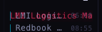

The fix: a cell with elements inside it keeps the old way of flashing, and so does an SVG cell, where a copy is never drawn at all. Both are one cheap property check. The economic chip and the earnings row are pixel for pixel identical to the live Hub on this branch.
6 · Where each number on this page comes from
- The pictures are real screenshots of the real Hub, running the three sets of bytes, with the page's own live data.
The local bytes are served as
https://scintillahub.ai, so the chart API sees the origin it accepts; nothing was written anywhere. - The flash is frozen by pausing its animation and setting its clock to 0 / 100 / 250 / 450 ms, so the same instant is captured in all three variants.
- The processor numbers come from Chromium's own performance counters (task, script, style and layout time) read before and after each run, divided by the seconds elapsed.
- Every cell uses the live Hub's own box for its screenshot, so the three pictures line up pixel for pixel; a cell whose box moved would show up as a size difference instead of “identical”.
7 · What could be wrong
- At its brightest the new flash is a hair bolder, because it is a second copy of the number drawn over the original instead of a recolouring of it: about 5–8% of a cell's pixels differ, the strongest by ~55 of 255, and the difference is gone by 450 ms. Nobody has yet looked at this on a live board with their own eyes.
- Safari is not measured. The iMac runs the Hub as a Safari web app, and only Chromium is installed here; downloading WebKit needs the coordinator's word, so this is honestly unmeasured. Safari does support the pseudo-element animation this relies on, but what it costs there is unknown. The old way still runs in any browser that does not support it — that path is tested.
- The processor counters describe the page's own thread, not the graphics chip. Moving the flash onto the chip is exactly what these numbers cannot see, so the saving shown is the main-thread saving; a machine with a weak graphics chip could pay some of it back elsewhere.
- Market data moves between runs. The driven measurement removes that by holding the flash rate steady at ~45 a second across 34 cells; the live-flow row does not, and a quiet minute reads lower than a busy one.
- Two kinds of cell never appeared while the page was open — the board's “outlier of the day” cell and the economic value cell — so they are not pictured. They are the same shape of cell as ones that are.
- The flash is drawn over the cell's own text, which stays put. If a cell's text is changed while its flash is still running, the copy would be showing the old number; the page stops the fade in that case, and a test pins it. A cell that both changes text and is hidden mid-fade has not been exercised.
8 · What I did not do
- Nothing was deployed, pushed or merged. The branch is ready for the coordinator.
- No browser was downloaded, and every browser used ran headless and was closed.
- No price table, no database and no schedule was touched; the Hub's other rooms are untouched.
- The glow's look — its colours, its 520 ms, its rules about direction and reduced motion — was not changed.